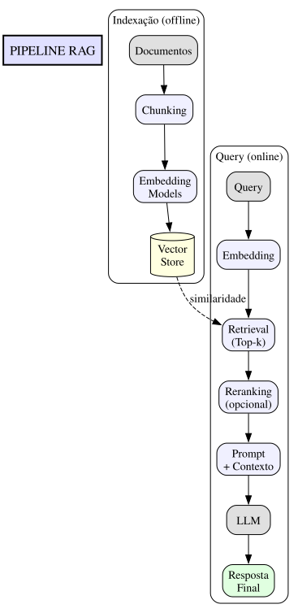

Introdução
Um dos maiores desafios em trabalhar com Large Language Models (LLMs) é que eles possuem conhecimento estático — limitado aos dados presentes no treinamento. Isso significa que:
- Não conhecem seus documentos pessoais
- Não sabem de informações pós-treinamento
- Estão limitados a "conhecimento congelado"
RAG (Retrieval-Augmented Generation) resolve esse problema de forma elegante, permitindo que LLMs acessem conhecimento externo dinamicamente.
O Problema do Conhecimento Limitado
LLMs como GPT-4 e Claude têm impressionantes capacidades de raciocínio, mas enfrentam limitações fundamentais:
- Cutoff temporal — Não sabem de eventos após a data de treinamento
- Domínio privado — Não conhecem documentos corporativos ou pessoais
- Alucinação — Quando não sabem, podem inventar informações plausíveis
- Falta de fontes — Dificuldade em citar origem de informações
O Paradigma RAG
RAG foi proposto formalmente por Lewis et al. (2020) no paper seminal "Retrieval-Augmented Generation for Knowledge-Intensive NLP Tasks". A ideia central: combinar a capacidade de geração de modelos de linguagem com a precisão de sistemas de recuperação de informação.
> Definição: RAG é uma arquitetura que recupera documentos relevantes de uma base de conhecimento e os fornece como contexto para um LLM gerar respostas fundamentadas.
Fluxo Arquitetural

Papers Fundamentais
Lewis et al. (2020) — O Paper Original
Título: "Retrieval-Augmented Generation for Knowledge-Intensive NLP Tasks"
Contribuições:
- Introduziu formalmente o conceito de RAG
- Demonstrou superioridade em tarefas de question-answering
- Propôs arquitetura de retriever + generator end-to-end treinável
Citação: > "We explore a general-purpose fine-tuning recipe for retrieval-augmented generation (RAG): models combine pre-trained parametric and non-parametric memory for language generation."
Chunking: Dividindo Documentos
Por que Chunking é Crítico?
Documentos longos não podem ser processados inteiros. Chunking divide texto em pedaços gerenciáveis, mas a estratégia de divisão impacta drasticamente a qualidade da recuperação.
Estratégias de Chunking
1. Fixed-Size Chunking
def fixed_chunking(text: str, chunk_size: int = 200, overlap: int = 0) -> list: """Divide texto em chunks de tamanho fixo.""" chunks = [] for i in range(0, len(text), chunk_size - overlap): chunks.append(text[i:i + chunk_size]) return chunks
Vantagens: Simples, tamanho previsível Desvantagens: Pode cortar frases no meio
2. Semantic Chunking
Divide baseado em mudanças semânticas no texto.
Vantagens: Preserva ideias completas Desvantagens: Mais computacionalmente intensivo
3. Recursive Chunking
Combina divisões hierárquicas (parágrafos → frases → palavras).
Vantagens: Balanceado entre simplicidade e semântica Desvantagens: Overhead de processamento
Comparação
| Estratégia | Latência | Qualidade | Uso Recomendado |
|---|---|---|---|
| Fixed-Size | Baixa | Média | Documentos homogêneos |
| Semantic | Alta | Alta | Documentos técnicos |
| Recursive | Média | Alta | Uso geral (recomendado) |
Embeddings: Texto em Vetores
O Que São Embeddings?
Embeddings são representações vetoriais de texto que capturam significado semântico. Textos semanticamente similares têm vetores próximos no espaço.
# Exemplo conceitual texto_a = "O gato dorme no sofá" texto_b = "O felino descansa no sofá" texto_c = "O carro está na garagem" # Embeddings (simplificado) embedding_a = [0.2, 0.8, 0.1, ...] # ~768 dimensões embedding_b = [0.21, 0.79, 0.11, ...] # Muito similar a A embedding_c = [-0.5, 0.2, 0.8, ...] # Diferente de A e B # Similaridade (cosseno) sim_ab = 0.95 # Alta similaridade semântica sim_ac = 0.15 # Baixa similaridade
Modelos de Embedding Populares
| Modelo | Dimensões | Descrição |
|---|---|---|
| text-embedding-3-small | 1536 | OpenAI, rápido e barato |
| text-embedding-3-large | 3072 | OpenAI, alta qualidade |
| all-MiniLM-L6-v2 | 384 | Open-source, local |
| e5-large-v2 | 1024 | Open-source, alta performance |
Vector Databases
Comparação de Vector DBs
| Feature | sqlite-vec | LanceDB | Chroma | Pinecone |
|---|---|---|---|---|
| Tipo | Embedded | Embedded | Embedded | Cloud |
| Licença | Open-source | Open-source | Open-source | Proprietário |
| Latência | Baixa | Baixa | Média | Variável |
| Custo | Grátis | Grátis | Grátis | Pago |
sqlite-vec
import sqlite3 import sqlite_vec conn = sqlite3.connect("vectors.db") conn.enable_load_extension(True) sqlite_vec.load(conn) # Criar tabela vetorial conn.execute(""" CREATE VIRTUAL TABLE embeddings USING vec0( content TEXT, embedding FLOAT[768] ) """) # Inserir conn.execute(""" INSERT INTO embeddings(content, embedding) VALUES (?, vec_f32(?)) """, (text_content, embedding_bytes)) # Buscar results = conn.execute(""" SELECT content, vec_distance_cosine(embedding, ?) as distance FROM embeddings ORDER BY distance LIMIT 5 """, (query_embedding_bytes,))
Recomendações por Caso de Uso
| Cenário | Recomendação |
|---|---|
| Protótipo/PoC | sqlite-vec ou Chroma |
| App local/desktop | sqlite-vec |
| Startup/MVP | Chroma ou LanceDB |
| Produção média escala | LanceDB |
| Produção grande escala | Pinecone ou Weaviate |
Referências
- Lewis, P. et al. (2020). "Retrieval-Augmented Generation for Knowledge-Intensive NLP Tasks". arXiv:2005.11401
- Gao, Y. et al. (2023). "Retrieval-Augmented Generation for AI-Generated Content: A Survey". arXiv:2312.10997